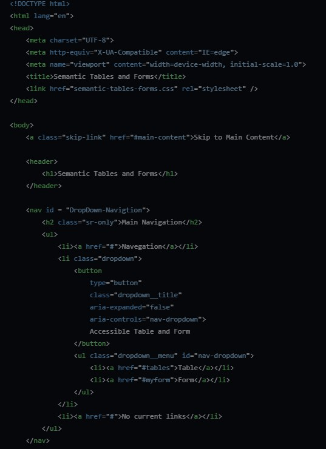

How
Now we have to understand some of the practical uses of these new structural semantic practices. We have to ensure the use of these tools to become a standard. We should pay attention to how we use these and how each tool will affect your goal on your page. These accessibility tools will ensure inclusive and adaptable structures, where everyone will benefit regardless.
The following are some of the practices to be used:
Tools
Forms: Forms are great for data recollection, we need to assure input is accessible. Use fieldset and related fields, such labe on all inputs. By having clear instructions and descriptions within the page, like placeholder, we ensure form understanding. Tables: Screen readers can interpret tables pretty well, allowing users blind to understand data. Use a table with tbody, th, thead, and caption for clarity. Dropdowns & Tabbed Browsing: Most important, as by Implementing ARIA (aria-expanded, aria-controls) we can actually implement nice flow changes. Also, it is important to understand toggle dropdowns and navigate tabs via keyboard or screen reader. Design: Use flexbox and Grid for fluid and accessible layouts that will adapt to the needs of users. We are in an era where mobile layouts are to be prioritized. Screen Readers/Text-to-Speech: Human-like text-to-speech will improve comprehension, and give a natural feeling to our understanding in general. Headings, tags of sorts, id’s, and meaningful link descriptions will support efficient navigation.
EXAMPLE
To give it a start, the following is a snippet of a basic starting template you can start with for your navigation, dropdown menu and even skip navigation.
